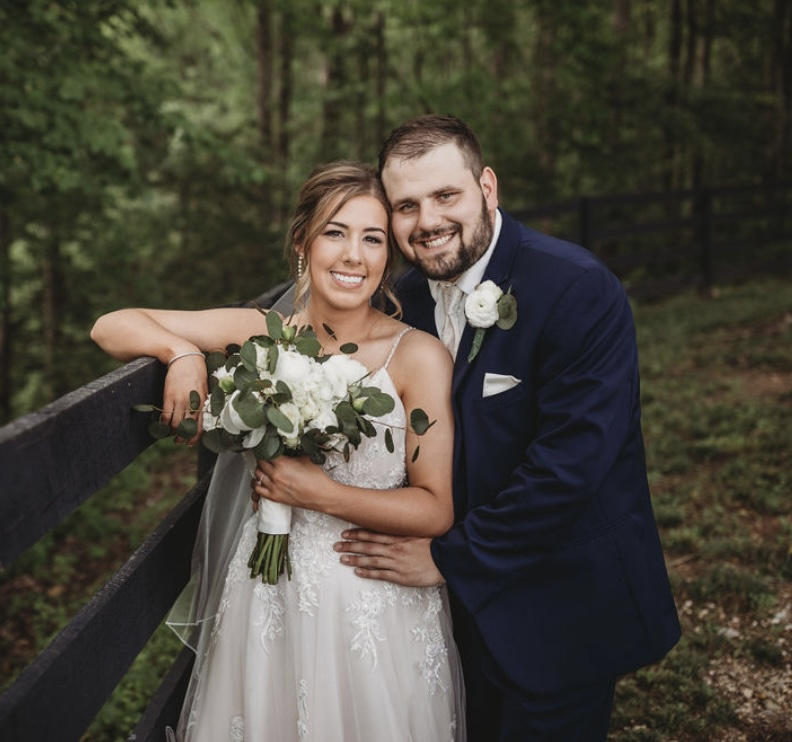
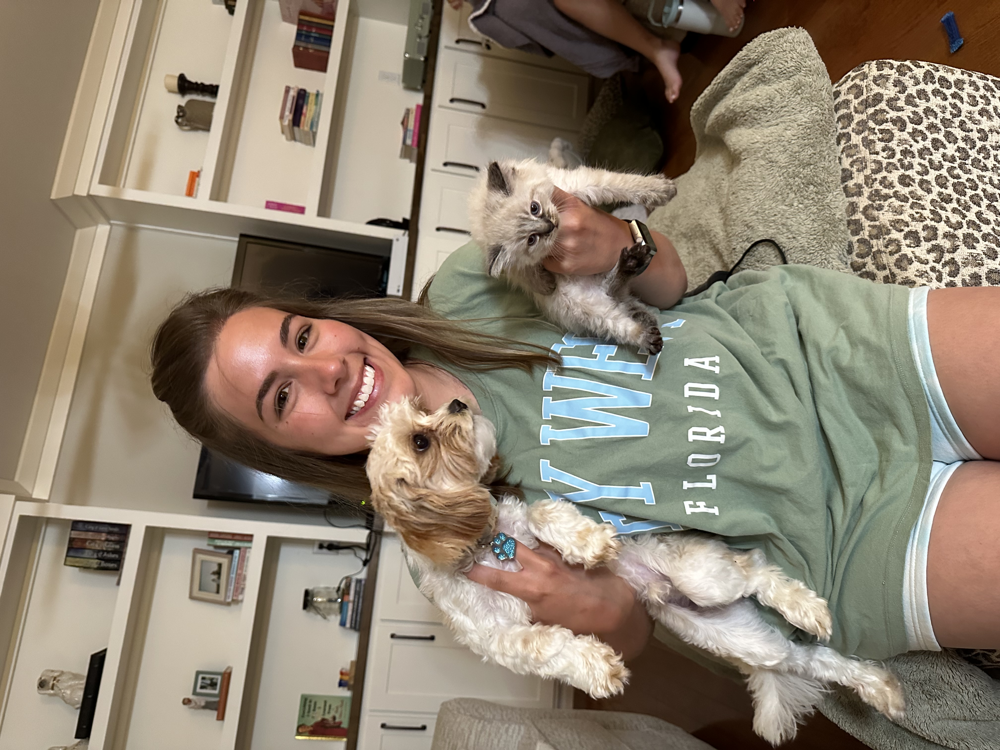

My Family
I married my best friend in May 2023. His name is Sammy. Sammy loves anything outdoors, and he loves working equipment. His family owns a sawmill and he assists in running the business. We have a puppy, Biscuit, and a new little kitten, Blue Jean. My priority is my little family and I love them with all my heart.
 
My Hobbies
I believe hobbies are a great way to stimulate your brain and keep your mental health in check. As a teacher, I find myself getting into a lot of different hobbies during the summer. Some of my hobbies include:
- golfing
- crafting
- gardening
- reading, of course
Continuing Education
I am currently enrolled in classes at EKU to complete my Masters in School Library Media. I am learning valuable information such as website design, how to suggest books to elementary age and young adult age students, and studying on on book awards and prizes.